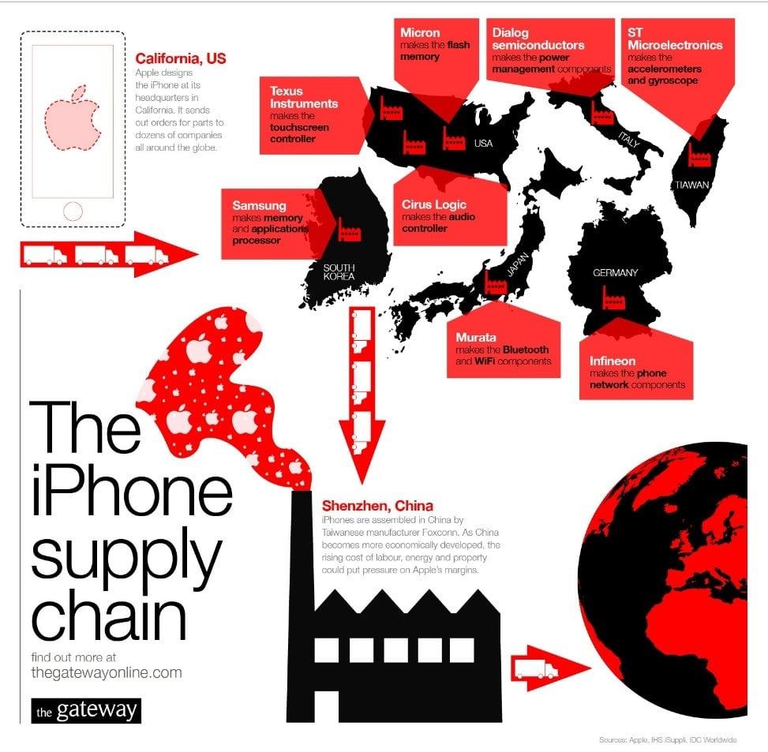
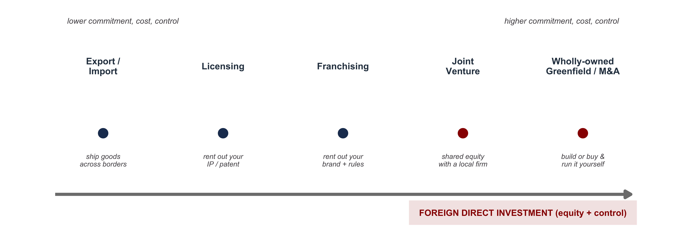
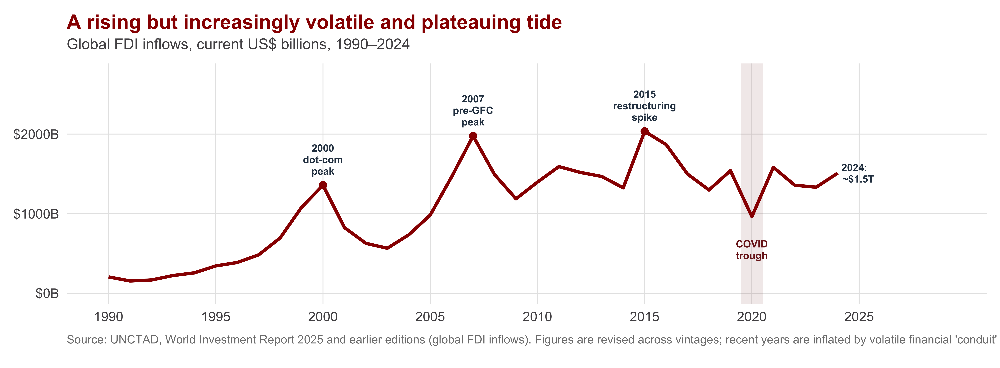
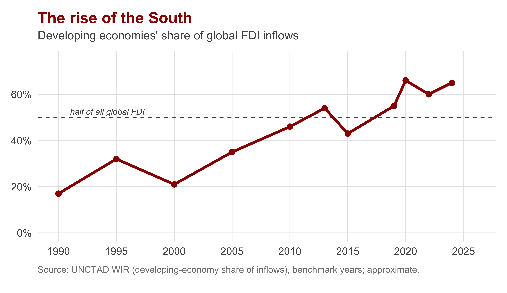
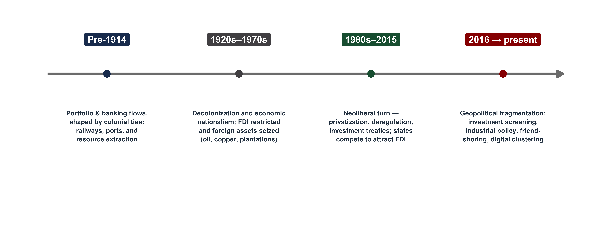

| Section | What we'll cover |
|---|---|
| 1 · What Is a Multinational? | FDI vs. trade, and the ladder from exporting to owning a foreign plant |
| 2 · The Scale and Shape of Global FDI | ~90,000 firms, ~$1.5 trillion a year, and 80% of world trade |
| 3 · Why Firms Go Multinational | Locational advantages, market imperfections, and the OLI framework |
| 4 · Horizontal, Vertical, and the Value Chain | Replicating plants vs. slicing the production chain into global value chains |
| 5 · A Century of Foreign Investment | From colonial portfolio capital to today's security-driven fragmentation |
| 6 · Multinationals and Host Countries | Does foreign investment help — or trap — the countries that host it? |
Multinational Corporations in the Global Economy
INTL 503 | Chapter 8
Professor Sarah Bauerle Danzman
July 16, 2026
Today’s Plan
Today’s Big Question
Why do firms produce inside other countries instead of simply trading with them — and who wins when they do?
What Is a Multinational?
An iPhone Is Not “Made” in One Place

Source: The Gateway (thegatewayonline.com); component data from Apple, IHS iSuppli, IDC.
A single product under one brand, yet its value is distributed across dozens of countries — held together not by trade alone, but by ownership and control.
Apple chose neither to make iPhones at home and export them, nor to license the design to a foreign manufacturer.
Why build, own, and coordinate production across borders instead? That decision is the multinational corporation — and the central puzzle of this chapter.
Multinational firms are now the organizing units of the world economy. To understand contemporary trade, technology, and development, one must first understand the firm that operates across borders.
Defining the Terms
| Term | What it means |
|---|---|
| Multinational corporation (MNC) | A firm that owns and controls income-generating assets (production) in more than one country. |
| Foreign direct investment (FDI) | Cross-border investment that gives a lasting interest and a measure of CONTROL — by convention, a stake of 10% or more in a foreign enterprise. |
| Portfolio investment | Cross-border purchase of stocks or bonds for a financial return, with NO intent to control. (This is the line between Ch. 8 and the finance chapters.) |
| Parent & affiliate | The home-country PARENT owns the foreign AFFILIATE (subsidiary). FDI is the financial flow that builds and sustains that relationship. |
The decisive word is control. Buy 5% of Toyota stock for the dividend → portfolio investment. Buy or build a plant you run → direct investment. Control is what turns a flow of money into a multinational firm.
The Ladder of Going Global
Firms don’t flip a switch from “domestic” to “multinational.” They climb a ladder of rising commitment, cost, and control.

Non-equity modes (export, license, franchise) are “asset-lite” — quicker and less costly, but they cede control. Equity modes (FDI) — greenfield, M&A, joint venture — are costlier and slower, but the firm owns and operates the activity. The chapter’s question: when is ownership worth its cost?
The Scale and Shape of Global FDI
Six Numbers That Define the Phenomenon
| What it measures | |
|---|---|
| ~90,000 | multinational enterprises operating worldwide |
| ~1 million | foreign affiliates they own across borders |
| ~$1.5 trillion | in new FDI inflows in 2024 (UNCTAD WIR 2025) |
| ~1/3 | of global output produced by MNCs + affiliates |
| ~1/2 | of world exports run through multinational firms |
| ~80% | of world trade flows through MNC-coordinated global value chains |
This is the core stylized fact of modern IPE: production itself has gone global. Trade between independent national firms is no longer the main story — intra-firm and MNC-coordinated production is.
Biggest by Which Measure?
![Three horizontal bar charts of the world's largest companies by three measures. By revenue (2024): Walmart, Amazon, State Grid, Saudi Aramco, China National Petroleum, Sinopec, and UnitedHealth — retail, energy, and health firms from the US and China. By market capitalization (2026): Nvidia, Alphabet, Apple, Microsoft, Amazon, TSMC, and Broadcom — all technology firms. By total assets: ICBC, Agricultural Bank of China, China Construction Bank, Bank of China, JPMorgan Chase, Bank of America, and Mitsubishi UFJ — all banks. A different set of firms tops each ranking.](day07-chapter08_files/figure-revealjs/fig-giants-1.png)
Sources: revenue — Fortune Global 500 2025 (FY2024); market cap — company data via The Motley Fool, 2026; assets — S&P Global Market Intelligence (year-end 2024). Figures approximate.
Three rankings, almost no overlap. By sales, retail and oil dominate (U.S. and China); by market value, the leaders are entirely U.S./Taiwan tech; by assets, they are banks (mostly Chinese). Only Amazon appears on two lists. “Largest” has no single meaning — each metric reveals a different face of the global economy.
FDI Flows: A Volatile, Plateauing Tide

FDI is Flatlining: 2024’s nominal +4% to ~$1.5T masks a second straight year of real decline (≈ −11% stripping out conduit flows). FDI has plateaued since the mid-2010s — a casualty of geopolitics, trade fragmentation, and industrial-policy competition.
🎧 Today’s podcast — McKinsey Global Institute, “Follow the Money: How FDI Is Redrawing the Global Economy.” We return to its argument in Section 5.
The Map Is Tilting Toward the Developing World

But the 2024 picture is highly uneven:
- Developed economies −22% — Europe collapsed −58%; North America rose +23% (US-led)
- Developing Asia stayed the top recipient (−3%); China −29%, but ASEAN +$225B (+10%)
- Africa +75% — but almost entirely one Egypt megaproject (≈ +12% without it)
- LDCs still receive a tiny sliver; the poorest economies are largely excluded from the network
Developing economies now attract the majority of FDI, yet those flows are highly concentrated in a small set of them. Foreign investment is widely courted but unevenly received.
Why Firms Go Multinational
First Question: Why Produce Abroad at All?
A firm could serve a foreign market by exporting. Producing there instead only makes sense if location itself confers an advantage.
| Motive | The locational logic | Example |
|---|---|---|
| Resource-seeking | Go where the inputs are — minerals, oil, land, cheap labor, agricultural commodities. | Shell in Nigeria; mining in Chile |
| Market-seeking | Go where the customers are — jump tariff walls, beat transport costs, tailor to local tastes, meet regulation. | Toyota plants in the US/EU |
| Efficiency-seeking | Split production to exploit cost differences — labor-intensive stages in low-wage sites, capital-intensive stages elsewhere. | Apparel assembly in Vietnam/Bangladesh |
| Strategic-asset-seeking | Go where the know-how is — acquire technology, brands, R&D talent, or distribution by buying into advanced markets. | Chinese firms buying EU robotics/auto brands |
These are locational advantages — the fourfold typology developed by Dunning, which Oatley surveys. They explain where production locates. By themselves, however, they justify only producing abroad; they do not yet explain why the foreign firm should own the operation rather than a local firm.
Second Question: Why Own It? Market Imperfections
If markets worked perfectly, a firm could just license or contract a local producer. Firms internalize — they own — only when the market for the transaction fails.
The “liability of foreignness”
Operating abroad is costly: unfamiliar consumer tastes, politics, law, language, culture. So firms prefer “asset-lite” licensing or exporting — unless a market imperfection makes control worth the cost.
When the market fails (internalize → FDI)
- Intangible assets (technology, brand, reputation) are hard to price and easy to steal — a license invites imitation
- Transaction costs of writing/enforcing contracts are high
- Quality control and the firm’s reputation are on the line
- Knowledge is tacit — it travels inside a firm, not in a contract
Internalization (Hymer; Buckley & Casson): when arm’s-length markets can’t safely transfer an asset, the firm replaces the market with its own hierarchy — it does the foreign activity in-house. That in-house, cross-border activity is the MNC.
Putting It Together: Dunning’s OLI Framework
John Dunning’s eclectic paradigm says a firm becomes a multinational only when all three conditions hold at once.
| The question | What it means | |
|---|---|---|
| O — Ownership | Do you have a firm-specific advantage? | A proprietary edge worth carrying abroad: technology, brand, scale, management, patents. |
| L — Location | Is a foreign location the best place to use it? | Locational advantages (Section above): resources, market access, cost, agglomeration. |
| I — Internalization | Should you exploit it yourself, not via the market? | Market imperfections make owning safer than licensing or exporting. |
Drop any one and FDI is the wrong choice. No O → you can’t compete abroad. O but no L → produce at home and export. O + L but no I → license a local firm. Only O + L + I together ⇒ the multinational corporation.
Horizontal, Vertical, and the Value Chain
Two Ways to Be Multinational
| Horizontal FDI | Vertical FDI | |
|---|---|---|
| What the firm does | Replicate the SAME production in another country | Fragment the production chain ACROSS countries by stage |
| Driving motive | Market-seeking — serve a local market from inside it | Efficiency-seeking — put each stage where it's cheapest |
| Trade effect | SUBSTITUTES for trade (you make it there instead of shipping it) | CREATES trade — components cross borders again and again |
| Typical sector | Often services & consumer goods that must be produced near the customer | Manufacturing split into design / parts / assembly |
| Example | Toyota assembly in the US; a bank opening foreign branches | Apple: design (US) → chips (Taiwan) → assembly (China) |
The defining shift of the last 40 years is the rise of vertical FDI — production divided into stages and dispersed across borders. This is what builds global value chains (GVCs), and it is why 80% of trade now runs inside firm-coordinated networks.
The Smile Curve: Where is Economic Value Created?
In a global value chain, the value-added isn’t spread evenly. It’s concentrated at the ends — and the middle, where developing countries often enter, is where it’s thinnest.

The development stakes in one image. Performing the assembly (earning the wage bill) is not the same as capturing the value (the rents). The central challenge for host countries is to upgrade — to move from assembly toward design and branding. Section 6 asks whether they can.
A Century of Foreign Investment
The Map Keeps Getting Redrawn

Three durable patterns: (1) most FDI has historically been rich-country-to-rich-country (and via M&A); (2) for developing hosts it shifted resources → manufacturing → services; (3) the poorest countries have stayed outside the network throughout.
Today’s Frontier: FDI Is Following Geopolitics
🎧 Our podcast — McKinsey Global Institute, “Follow the Money.” MGI tracked 200,000 cross-border investment announcements, 2015 → 2025:
- Since 2017, the geopolitical distance of greenfield FDI has shrunk ~2× faster than trade’s — firms increasingly invest on the soil of their geopolitical allies
- Japanese & Korean firms cut new China investment most, accelerating into the US
- Since 2022, ~75% of greenfield announcements go to “future-shaping” sectors (chips, AI/data centers, pharma, defense, clean energy) — up from ~55% pre-2020
The Chapter 5 thread returns. FDI is no longer driven by efficiency alone — it’s being reorganized by security and alliance. “Follow the money” and you can read the geopolitical map.
This is why UNCTAD’s productive FDI has plateaued: firms are trading some efficiency for resilience and political safety.
Multinationals and Host Countries
Does FDI Help the Countries That Host It?
The development case rests on a chain of logic — and each link is contested.
The optimistic case
- Poor countries are savings/capital-constrained (Harrod-Domar) — FDI brings capital that growth cannot self-finance
- FDI transfers technology, management, and know-how the country lacks
- Spillovers: local firms learn, supply, and compete up
- FDI creates jobs, often at a wage premium (up to ~30% over local firms — Lipsey & Sjöholm 2004)
The dependency critique
- MNCs repatriate profits — especially in resource extraction — returning value to the home country
- They can displace local firms and stunt indigenous capability (patents, rents)
- Host states risk structural dependence on footloose firms with no lasting local loyalty
- Value sticks at the bottom of the smile — assembly, not design
Notice the structure: the same investment can transfer technology and repatriate profit; create jobs and displace local firms. Whether the net is positive is empirical and conditional — not settled by ideology.
It Depends: Absorptive Capacity
The evidence converges on a frustrating-but-important answer: FDI helps conditionally — and the conditions are exactly what the poorest countries lack.
- FDI is associated with growth — but the benefit is not automatic
- Positive spillovers depend on absorptive capacity: a host’s skills, education, infrastructure, and local-firm capability to absorb what the MNC brings
- So the countries best able to benefit are those already somewhat developed — and the poorest reap the least
- Whether local firms get pulled into the MNC’s supply chain is context-specific
The cruel irony of FDI-led development: the spillovers that make FDI valuable require capabilities the poorest countries don’t yet have.
FDI can amplify a development trajectory; it rarely starts one from nothing.
This points toward Chapter 9 (tomorrow): the politics. If the benefits are conditional and depend on terms, then bargaining, regulation, and policy determine who captures what from the multinational. The economics frames the political contest.
Student Presentation
Over to today’s presenter
Pandya (2016) — “Political Economy of Foreign Direct Investment: Globalized Production in the Twenty-First Century” · Annual Review of Political Science 19
Presenter: ______________________ · Q&A and class discussion to follow
A field-defining review of twenty years of FDI research. Why have countries grown so open to multinationals — deregulation, investment incentives, treaties — even as the evidence that these policies attract FDI stays contested? And why does Pandya say the way forward is to disaggregate FDI by production activity — exactly the horizontal/vertical and GVC distinctions from today?
Recap: The Logic of the Multinational
Today’s Big Question — Why do firms produce inside other countries instead of simply trading with them — and who wins when they do?
Why the firm goes abroad
- FDI = cross-border investment for control (≥10%); the MNC owns production in many countries
- OLI: FDI happens only when Ownership + Location + Internalization line up — otherwise export or license
- Vertical FDI slices the chain into global value chains → 80% of trade; value sits at the ends of the smile
Why it’s politically charged
- Production has gone global: ~90k firms, ~½ of exports, but the poorest stay outside the network
- FDI now follows geopolitics, not just efficiency (today’s podcast)
- Host-country gains are real but conditional on absorptive capacity → the fight over terms is Chapter 9
The multinational exists wherever it’s cheaper to coordinate cross-border production inside a firm than through markets. That single insight explains the shape of the world economy — and sets the stage for the politics of who captures the gains.
Writing Prompt: Does FDI Help or Trap Host Countries?
Writing prompt. Today’s chapter left you with a cruel irony: the absorptive capacity a country needs to benefit from FDI is exactly what the poorest countries lack.
Pick a specific country or industry you know something about (or invent a plausible one). Using OLI, absorptive capacity, and the horizontal/vertical distinction, argue whether the multinational’s presence there is more likely to be a genuine engine of development or an isolated enclave. What would the host government need to change about the terms of the deal to shift the answer?
Write for about fifteen minutes. Name at least two concepts from today explicitly. We’ll discuss before moving to tomorrow’s politics chapter.

INTL 503 | Multinational Corporations in the Global Economy